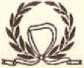
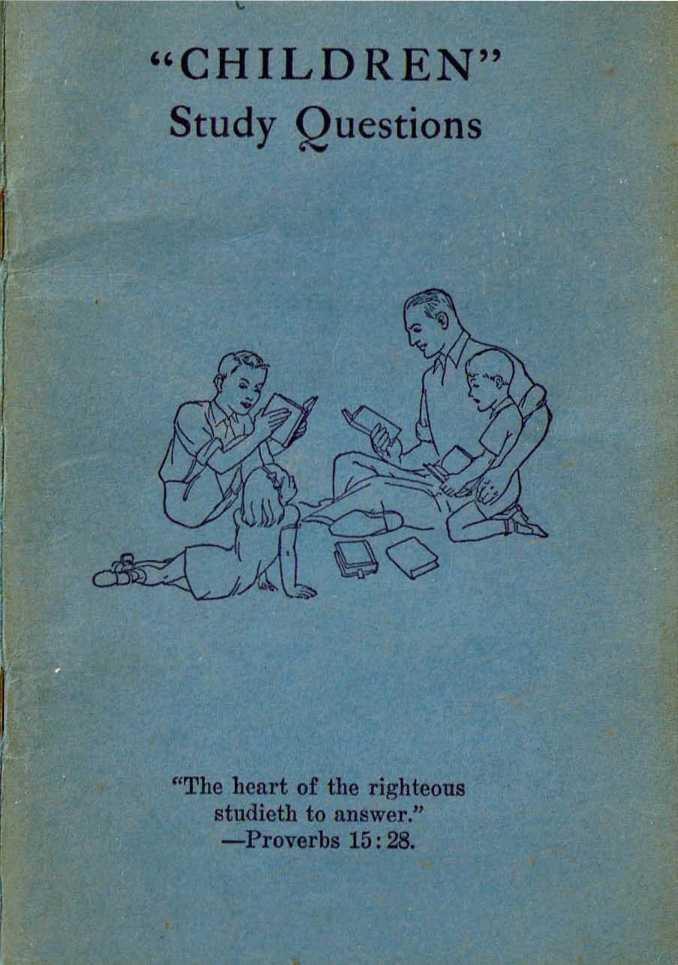

“The heart of the righteous studieth to answer.” — Proverbs 15:28.
Copyright, 1942 AND PUBLISHED BY
W A T C n T 0 W E R Bible and Tract Society, Inc.
International Bible Students Association
Brooklyn, New York, U. S. A.
Made in the United States of America
PROFITABLE STUDY
TN THIS blackest time of all human history it is most important, if you want to enjoy life and peace on earth, to study the Bible. To those who do so with honest hearts and teachable minds the great Teacher and Author of the Bible gives light and understanding today such as men in all past ages have never had.
Education of the people in the truths of God’s Word is the purpose for which the Watchtower Bible and Tract Society, Inc., was organized and exists. It acts as the servant and publisher for those faithful Christians Scripturally known as Jehovah’s witnesses. The actual proof shows that the most effective way to study God’s Word and arrive at the truth is with the help of the books published by this Society. They provide you a systematic course of study and assist you to clearly see and appreciate the key facts in the Bible for your guidance and comfort.
One of the latest of such publications is the book Children. It is of vital benefit to study it, because it opens to you the meaning of our day and the wonderful things in store and which you have an excellent opportunity to live to see by being guided by this information. Since its
3
publication, in more and more communities study groups are being formed for Bible investigation with the use of Children. It is the privilege of any number of interested persons in a neighborhood to gather in any private home offered and to hold such a study class. Jehovah’s witnesses, as representatives of the Society, freely devote their time and attention to establishing and conducting such studies in the homes. This follows the example set by the Lord and his apostles and has his blessing. The purpose is not to gain or build up membership in any man-made organization, but it is done to aid you and others to walk in the way of life and to escape the destruction shortly coming on the world.
The Children study should be conducted regularly, once each week if possible, on a set day and at a fixed time of day. It should be an hour in length. Due to its very purpose, the study should be opened with prayer by someone competent. An effort should be made to cover* ten pages of the book at each study. Hence beforehand all those attending should read the assigned number of pages and look up the Scriptures therein cited. At the meeting itself the conductor of the study will submit the questions on the lesson. The study should progress, discussing one paragraph at a time. First the conductor will ask the question on the paragraph. Then any desiring to answer should so indicate by raising the hand and, when called, should answer in their own words. This will enable them to develop the ability to express their thoughts concerning what they have read and learned and thereby to become a witness for the Lord God. The Bible texts not quoted but cited in the paragraph should be assigned various ones to road, with any brief comment thereon they care to make showing its relation to the subject. The study conductor will also call for other appropriate scriptures to be read that corroborate the matter further. Finally the question should be summed up completely by the reading of the paragraph in Children. At each study one who reads well should be appointed to do the reading of the paragraphs. Then the question on the next paragraph should be offered and discussion thereon follow; and so on through the hour.
In the above behalf the booklet entitled "Children Study Questions” has been provided, and all students will find it most valuable and helpful. The scriptures after each question are corroborative and should be read and commented upon in connection with the discussion of the question. In view of the perilous times and the misleading schemes of imperfect men now put forth, it is wisdom for you to seek the highest authority on world conditions, which is the Bible.
Faithfully and diligently following out the above-outlined course of Bible study, you are certain to realize blessings which will be a joy and strength to your heart in these trying days, and you can aid your fellow man. Invite such also to the study with you. Be assured of our good wishes and help in this most profitable study, looking to your gaining the knowledge and understanding that lead to life.
Watchtower Bible and Tract Society, Inc.
Publishers.
QUESTIONS for studies in the book “CHILDREN”
Bold figure indicates page; superior figure indicates paragraph.
CHAPTER 1
CHILDREN
91 Who were the Aldens and the Rogers? Gal. 5:1.
9 2 What were the characteristics of Joseph Alden and his family? Gen. 2:18; Job 31:32; Heb. 13:2.
10 1 What were the characteristics of the Rogers family? Col. 3:18-21.; 1 Tim. 3:4, Weymouth.
102 On what good terms were these two families, and were they of any religious denomination? 2 Cor. 6:17; 2 Tim. 2:15,16.
111 How did they try to carry out that parental obligation? Deut. 6:6,7; Matt. 18:20.
Il2 When John was sixteen and Eunice was fourteen years old, what change took place in their lives ? Prov. 18: 9.
12 1 Four years later, at vacation time, what happened? Heb. 10:24,25; Col. 3:16; Prov. 15:13.
12 2 WTiat had changed in those four years, and what not? Ex. 20:12.
13 1 Why was Eunice now a delight? 1 Tim. 2:9,10.
13 2 After the family study, what did John and Eunice do? Eccl. 3:11.
13 3 How did John regard his graduation and future vocation ? Prov, 6: 9-11.
141 How did both esteem their parents, and why ? Eph. 6:1-3.
15 1 What thoughts did Eunice express regarding Jolin’s name? Jas. 1:17.
16 1 What did John reply as to the meaning of the name Eunice? 2 Tim. 3:12-17; Col. 2:8; Bom. 1: 20-22, 25.
17 1 What conditions did John and Eunice find to exist at the seminaries and colleges of today? Jer. 23: 25-32; 2 Tim. 3:1, 2, 5 ; 1 Cor. 1:18-21.
181 What course is followed by theological teachers at colleges, and what is the effect? Jer. 8: 8,9, A.R.V.; 2 Tim. 4: 3, 4; Job 32: 21, 22.
18 2 What is the deeper meaning of the name Eunice, and how did it apply to Eunice Bogers? 2 Tim. 1:5; Prov. 22:6.
19 1 While John and Eunice wore apart, what was her constant prayer ? Phil. 4: 6.
20 1 On that afternoon what serious event in their lives took place?
20 2 What had John’s father suggested to him concerning his future ? Prov. 24: 6; 15: 28; 19: 2.
211 What did John propose he and Eunice do? 1 Thess. 5: 21; Bom. 12:2; John 5: 39.
221 Why did Eunice readily agree? 2 Tim. 2:15; 3:15.
23 1 How did they then agree to proceed? 1 Pet. 3:15; Acts 17:11.
CHAPTER 2
THE BIBLE
241 In what attitude and with what expectation did they begin their study? Luke 11: 9-13 ; Prov. 2:1-5; Ps. 25: 9.
25 1 Where will sincere persons who desire the truth find it? Titus 1:2; Rev. 21: 5.
25 2 To what do the Scriptures guide those who desire God's approval? Pss. 19:7,8,11; 119: 129,130,133,
261 What assurance does God give to the sincere seekers for truth that he will teach them his truth? Isa. 46:11; 55:11; 1 Cor. 1: 9.
27 1 What do the wise seek after, and where? Prov. 8:10,11; 30: 5; Jas. 3:17.
27 2 What is the desire of the wise, and how only can he obtain it? Prov. 6: 23; John 14: 6; Acts 4: 12.
281 Why are those foolish who despise wisdom and instruction? Prov. 14:12; Jer. 9:23,24; 10:23.
28 2 What two kinds of evidence prove the Bible contains the genuine record of God’s Word? Matt. 18:16; John 8:17,18.
283 What is the Bible, and its purpose; also the “canon”, and the “Apocrypha”? John 17:17; Tim. 3:16,17.
291 What does the word “canon.” mean, and how was it arranged ? Ex. 24:12.
292 How were the first five books of the Bible written ? Ex. 24: 4; Dent. 31: 9.
30 1 Why should one study the Bible with reason, and what great name did God reveal to Moses ? Isa. 43:9; Acts 17 :11.
30 2 How, no doubt, was an accurate account of the general history of man transmitted from Adam to Noah? Ps. 78:3-6.
311 Why is it reasonable to conclude that Abraham had an accurate knowledge of the history of mankind up to his day'? Rom. 10:17.
312 From the human viewpoint, how did Moses acquire information of the history of mankind from the beginning until his own day ? Ps. 145 :4.
33 1 Why will evolutionists or higher critics reject these conclusions and also the testimony of all creation that there is a Supreme One? Ps. 10:4; Prov. 27:22; Rom. 1:19-22, Weymouth.
33 2 What facts prove that Jesus was not an ordinary man? Matt. 1:18-23; Acts 2: 22; 4: 33. "~33 3 How did Jesus verify the fact that the Bible
is the authentic Word of God? John 17:17.
341 How does the last book of the Bible establish the inspiration of the Scriptures? Rev. 1:19; 21:5; 22:6.
342 What title guarantees that the testimony of Christ Jesus is absolutely true ? John 7:17,18; 14:24.
35 1 How did Jesus before and after his resurrection affirm the inspiration of the Bible?
35 2 Besides a Bible writer, what was Moses, and as such whom did he foreshadow? Deut. 34:10; John 1: 45.
35 a How did Jesus verify the Scriptures as giving testimony unto life? Matt. 4:4.
36 1 How do the words of Moses and of Peter prove Moses was a type of Christ? Acts 7:37. 36 3 Why does Christ Jesus speak with full authority? John 14:6-11; 2 Pet. 1:16-19.
37 1 What power in operation and what acts of Jesus guarantee that all the Bible prophecies are true?
38 1 What applications of scriptures show that Jesus verified the words of the prophets? Matt. 21:12-16; John 2:13-17.
39 1 What further testimony by Jesus concerning Daniel, Noah, and others confirms the law and all prophecy?
39 2 How did Peter at Pentecost and later testify to the authenticity of the Scriptures?
40 1 What statement by Paul confirms the trueness of all Scripture?
40 2 Wily are the prophecies the most conclusive circumstantial evidence of the authenticity of the Scriptures ? Prov. 27 :1; Isa. 42: 9; Amos 3:7.
411 What is a true prophet, and true prophecy; and when is prophecy understood? Jer. 28:9; Dan. 12: 4, 8-10; 1 Pet. 1:10-12.
42 1 What is proved by the fact that all prophets have foretold the coming of God’s kingdom and his King? Isa. 9: 6, 7; Dan. 2: 44; Matt. 6: 33. 42 2 Who uttered the first prophecy, and how was prophecy thereafter given ? Heb. 1:1, 2; 2 Pet. 1:20,21.
43 1 Concerning whom did Jehovah’s prophets foretell for four thousand years, and what is proved by the exact fulfillment? Luke 1: 67-70; Acts 3:18.
43 2 Who cannot understand the Bible, and what is the reason? 2 Cor. 4: 4; 1 Tim. 6: 20; 1 Pet. 5:5.
44 1 What is the attitude of today’s college professors and preachers toward the Bible? Isa. 29:13,14; 1 John 2:22.
44 2 How were John and Eunice forearmed for such faith-destroying influence? Prov. 22:6; Heb. 11:6.
443 What subject did John suggest to Eunice for the next study? Ecel. 12:1; Col. 2:8.
45 1 What is proved by the historical fact that all efforts to destroy the Bible have failed? Ps. 100:5; 1 Pet. 1:24, 25.
452 From whom and how do the wise gain knowledge and understanding?
461 Who recently caused 110,000 Bibles to be destroyed in Spain, and why? Jolin 8:31,32; Kev. 22:18,19.
462 Why did this significant news item appear only in the first edition of the New York Times? Luke 11:52; John 3:19, 20.
47 1 What did John and Eunice do in order to increase their appreciation of God's Word as man’s only safe guide? Ps. 1:2; Eom. 12: 2.
CHAPTER 3
THE CREATURE
48 1 Why was John confident that he and Eunice were following the right and wise course? Prov. 4:5-7; 24:3-5.
49 1 Contradicting the worldly-wise, what scripture did John cite to Eunice concerning man, disproving the theory of evolution ? 1 Cor. 1:18-20; Rom. 1:20-22, Weymouth.
49 s By whom and how was man created? Gen. 1:28; Acts 17:24-28.
50 1 How did man become a living soul, and in what order were man and woman created?
1 Tim. 2:13.
50 - What are the attributes of God, and how was the perfect man in God’s image and likeness? Rom. 14:12.
50:| What is the immortal soul doctrine, and why is it false? 1 Tim. 6: l(i; Jer. 8:8, 9.
51 ’ What duty and privilege were given to Adam concerning the garden of Eden, and what did Jehovah require of him? Gen. 1:28-30; 2:15. 512 Why was man justly sentenced to die? Gen. 2:17; 3:17-19; Rom. 6:23.
52 1 How does this death sentence disprove the doctrine of man’s “inherent immortality”? Eccl. 9: 5,10; Ezek. 13:19.
52 2 What is a soul, and who invented the doctrine of its “immortality”? Num. 31:28; Ps. 146:4; Gen. 3:4.
53 1 What is the meaning and correct application of the words “being”, “creature,” and “god” ? Ex. 3:14; Col. 1:15-17; 1 Cor. 8:5,6.
54 1 In what way are Jehovah and Jesus one? John 17:21,22.
55 1 Who was Lucifer, and what names does he have now * Isa. 14:12; Ezek. 28:14,15.
55 1 For whom was the earth made, and what took place in heaven when the Creator laid the foundations of this planet? Ps. 115:16; Prov. 2:21, 22.
56 1 Why did Lucifer turn against Almighty G od, and what did he do also to turn man away from the Most High? John 8:44; Jas. 1:14,15.
56 3 What was the beginning of wickedness and religion? 1 Sam. 15: 23; 2 Cor. 11: 3.
571 Why is Lucifer since the day of Eden known as “the wicked one”, and what will be his final end? 1 Pet. 5:8; Heb. 2:14.
59 1 What was the result of man’s disobedience and Satan’s rebellion? Gen. 3:15; 5:5; Ps. 90: 3,4.
59 2 When Satan saw that man was not immediately executed, how would he reason, and what did he do? Job 1: 6-11.
60 1 Why, then, was the wicked one not executed at the time he was adjudged guilty and sentenced to death? Ps. 83:17,18; 1 Pet. 1: 6, 7.
62 1 Why have all men inherited death, what choice has God left man free to make, and with what result? Dent. 30:19, 20; Jas. 1:12.
63 1 How did Satan’s challenge to God appear to succeed from the time of Abel to the flood? Gen. 6: 5,12; Heb. 11: 4-7; Prov. 16:18.
64 1 What has Satan done to angels and men to carry out his purpose to turn all creation against the Most High? Jude 6; Ps. 74:10.
66 1 What was prophetically pictured by the conditions in Noah’s day and the great flood? Matt. 24: 37-39, 21; Luke 21: 34-36.
67 1 Of what was the ark a prophetic type, and what commandment did God give to the survivors of the flood? Heb. 11:7; 2 Pet. 2:5; Isa. 26:20, 21.
67 2 After the flood, how did Satan turn men away from the Almighty God ? Acts 17: 22 (compare A.It.V. and Diaglott); 1 John 5:19, A.R.V.
68 1 What is religion, and how has it been used?
i Rom. 6:16; 2 Cor. 4:4; John 8: 32.
69 1 H ow has Adam’s sin a fleeted his posterity, yet how may men receive God’s approval? Ecel.
7 : 20; Mie. 6: 8.
70 1 Why is a study of the Bible of the greatest importance to anyone who desires to live? Ps. 49:7; John 5:39; Rom. 5:18.
70 2 When Adam died, did his soul survive? Gen. 3:19; Ezek. 18:4, 20.
70 3 As far as the Devil himself is concerned, how is the doctrine of “inherent immortality” of all souls a devilish lie? Gen. 3:4; Matt. 25:41.
71 1 Why arc also the religious dogmas of “purgatory” and “eternal torment in hell” doctrines of demons? 1 Tim. 4:1; Rev. 29:13, margin.
72 1 How does Jehovah’s promise of a resurrection out of death prove the religious doctrine of “inherent immortality” a lie? Job 14:13,14; John 5:28,29; Titus 1:2.
73 1 What is “immortality”, who only possesses it, and who shall gain it? John 5:26; Rom.
2: 6, 7; 2 Tim. 1:10.
74 1 How are the “purgatory” and “hell fire” doctrines supported and used by religionists.? Isa. 28:15; 29:13.
74 2 How only can any of the dead live again? John 11: 25, 26; Rom. 5:18,19, 21.
74 s What is the only way to life eternal? John • 3:16,36; 6:40; 14:6.
75 1 What does John propose for the next study, and what reasons does he give ? Matt. 23:13; John 8:51.
CHAPTER 4
THE HOLY CITY
761 What is the Holy City, and by what other symbols is it illustrated ? Isa. 2: 2, 3; 60:14,15; Zech. 8: 3.
77 1 By whom and where has this city been built, and for what purpose? Pss. 2:6; 29:9; Heb. 12:22.
78 1 After the flood, with whom did God begin to make pictures pointing to the building of his Holy City? Rom. 4:18-24; 1 Cor. 10:11.
791 What parts were played by Abraham, Sarah, and Isaac in that prophetic drama, and how does the apostle sum it up? Rom. 4:17, margin; Gal. 3:16, 29; Heb. 11: 6.
80 ’ To what great test of faith was Abraham subjected, and what did that foreshadow? Jas. 2:21-23.
811 How did the deliverance of Abraham’s descendants picture the deliverance of Christ’s followers ? Acts 3: 22; Gal. 1:4; Heb. 11: 20-29.
82 1 What is a type, and what types did Jehovah- make with Israel in Egypt and later at Mt. Sinai? 2 Sam. 7:22-24; Col. 2:17; Heb. 8:5; 10:1.
83 1 What did God give to safeguard his people from demonism or religion ? Ex. 23: 32,33; Gal. 3:19, 24.
83 2 Wliy was Israel as a nation destroyed? Ps. 106: 35-45; Rom. 9: 27.
841 How and specifically for whose benefit did Jehovah reveal his purpose to set up his Holy City? Jer. 7: 25; 1 Pet. 1:10-12; 2 Pet. 1:19-21.
85 1 When does the Holy City begin to come down from God out of heaven, and what condition exists on earth at that time ? Ps. 110: 1, 2; Isa. 52:1,2,7-10; Matt. 24:3-8.
861 How is this condition confirmed by the prophet Daniel? Jer. 23:19,20; 30:23,24, A.R.V.; Dan. 2:44.
87 1 Why are the wise permitted to understand Jehovah's purpose to build his Holy City? Pss. 25:14; 111:10; Prov. 1:5-7.
87 2 How only can one become truly wise? Ps. 119: 98-100; 1 Cor. 1: 20, 21, 27; Jas. 3:13,17, A.R.V.
87 3 For whose learning were the Holy Scriptures written? Ps. 97:11; 1 Cor. 10:11.
88 1 By whom was the Messiah pictured, and by whom are these things to be understood? Deut. 18:15; Ps. 25:9,12.
88 2 What facts did’ God foretell concerning the Messiah, and who were permitted to be witnesses as to his birth? Luke 1: 30-33; John 1:41, margin.
90 1 How and why was the Son of God made flesh, and how has this fulfilled and verified prophecy? Gal. 4:4; Rom. 1:3,4.
911 What shows Jesus did the will of his Father even before reaching manhood? Job 32: fill; Ps. 8:2.
92 1 What took place when Jesus was thirty years of age, and what did his action signify? Luke 3: 21-23; Heb. 7 : 28.
92 2 After his baptism, what did Jesus begin to preach, as to the Kingdom, and what did that mean? Luke 10: 9,11; John 4: 23, 24.
93 1 What did Jesus emphasize above everything else, and what was the reason therefor? Isa. 2:11,12,17,18; Zech. 14: 9; Luke 4: 43.
941 Who are the “poor in spirit”, and how are they blessed? Ps. 8 :3,4; Matt. 5:5; Jas. 4: 6, 7.
94 2 In contrast with the worldly-wise, what do the poor in spirit realize? Ps. 10:4; Prov. 15: 32, 33; Matt. 23:12.
95 For what did Christ teach his followers to pray, and how must their manner of praying differ from that of religionists? Prov. 15: 8, 29; 28:9; Eccl. 5:2.
95 2 Why is that prayer of so great importance? Isa. 5:15,16; 9: 6, 7; Luke 9: 59-62.
96 1 How did the prophets show that The Theocratic Government is of paramount importance ? Ps. 145:10-13; Matt. 25; 34; Acts 3 : 20-24.
96 2 After Jesus had finished his mission, what report did he make to his Father, and what did he ask for himself? Ps. 40: 8-10; John 6: 38, 62. 97 1 Why was he arrested and falsely charged, and what did he then reply concerning his kingdom and kingship ? Isa. 53: 4-9,12; Luke 23:2; John 19 :12.
98 1 What fact did this testimony of Jesus establish, and how did this Faithful and True Witness die? Luke 4:43; Bev. 3:14.
982 What was the means of Christ’s execution, and how was he thereby made to appear? 2 Cor. 5: 21; 1 Pet. 2: 22-24.
99 1 In the purpose of Jehovah what is of paramount importance, and how long was it a mystery? Matt. 13:16,17; Rom. 16; 25, 26.
1011 What is the kingdom of heaven, and to whom has God’s purpose concerning this mystery been revealed? Ps. 25 :14; 1 Cor. 2: 7-10,14; Rev. 14:1, 3.
102 1 What was required of the One who would become the Head of the capital organization of the Most High? Phil. 2: 6-11, A.R.V.; Heb. 5: 8.
102 2 These words of Jesus are proof of what agreement? Ps. 21:1-6; Luke 22:28-30, Diag.
103 1 Why is the Holy City here considered ahead of the ransom price for obedient man? Matt. 6 :10, 33.
103 2 Why did Jesus often speak in parables, and when and by whom can they he understood? Ps. 97:11; Matt. 13: 34, 35.
104 1 ’What was the joy set before the Son of God, and in response what did he do ? Heb. 12:2; Pss. 40:7,8; 45:1-7.
105 1 That man’s joy and his keeping the treasure a secret had what fulfillment ? Matt. 13:13-15; 16:21; 17:9; John 16:12.
105 2 What is it that is emphasized in these parables, and when were they first understood? Matt. 6:33; Eph. 1: 9,10; 3: 8-11.
106 1 To what does the ‘buying’ in these two parables refer? 1 Cor. 7:23; Rev. 3:21; 17:14.
1071 Of what are the faithful followers of Christ Jesus made members and heirs'? Gal. 3:29; 2 Tim, 2:12.
107 2 How, then, did Jesus become the heir of all things ? Matt. 21: 38, 39; 1 Cor. 8: 6.
107 3 How did the Son of God sell all he had and purchase the kingdom of heaven? 2 Cor. 8:9; Heb. 2:9,10; 5:8.
108 1 How does Philippians 2:5-11 prove this fact? John 10:17,18; Heb. 10:12-14,10; Rev. 5: 9-13.
108 2 Why have men, even many Christians, failed to realize the paramount importance of The Theocracy? Pss. 8:3,4; 144:3,4; Jer. 9:23, 24; Rom. 12: 3.
109 1 What was the ransom price required for mankind, and what is proved by the fact that the Son of God gave far more? Mark 10:45; John 6: 51.
110 1 Why was the life of a perfect man, nothing less, nothing more, the required ransom price? Gen. 1: 27,31; Rom. 5:18,19; Heb. 5: 9. Ill' Why could no one but Jehovah provide salvation, and how did he do it through his Son? Job 12:10, margin; Rom. 6:23; Heb. 10:4-14. 112 1 How does the apostle John testify that the Logos became a man? John 8: 42, 58; 13: 3; 17:5.
112 2 To become man of whom must the Logos be born, and for what purpose does Paul say Jesus was born ? Luke 2: 21-24, 39-42; Gal. 3:13. 1123 That statement concerning redeeming those under the law raises what question? Rom. 7:1,12.
112 4 Why did Jehovah enter into a covenant with the Israelites? Dent. 7: 6-8; 1 Cor. 10:11. 113 1 In redeeming those under the law, what did Jesus purchase, and what is thus emphasized as of paramount importance? 2 Sam. 7: 23, 24; Ezek. 21:26, 27; Heb. 1:2.
1141 That purchase included whom else? Rom. 3: 29; Rev. 5: 9,10.
1142 How was the ransom price for obedient man provided and presented before Jehovah’s judgment scat ? 1 Tim. 2: 5, 6; 1 Pet. 1:18,19; Heb. 10:10-12.
116 1 Where did God cause to be made a living picture foretelling the appearing of Jesus Christ in heaven and there presenting the ransom sacrifice? Col. 2:17; Hob. 8:1-5.
116 2 How was the atonement-day picture enacted, and what did it typify? Heb. 10:1-10; Acts 4:12.
118 1 What was the ransom price for the condemned offspring of Adam? Eph. 1:7; Col. 1:14; Heb. 9:12,22.
118 2 What did Jesus buy -with his lifeblood, and who received the benefit thereof? Mark 10:45; John 3:16,18, 36; Heb. 5: 9.
119 1 How was Jesus, having died as a man, enabled to pay over the right to human life as a purchase price? Ex. 21:23-25; Rom. 4:25; 1 Pet. 3:18.
1192 Why can mankind gain life everlasting only by and through Christ Jesus? John 5:21, 22; 14:6.
120 1 Why is life a free gift of God? Ps. 36:9; Acts 17: 24, 25.
1211 To whom only is God’s gracious gift of eternal life effective? Matt. 7: 7,8; John 6:47-51; Rev. 22:17.
1212 How are both the religious doctrine of man’s inherent immortality as well as the evolution theory disproved by God’s provision for man to live? 1 Tim. 6 : 1G, 20, 21; 1 John 5: 9-12. 1213 For whom did Jesus die, and for whom did he not die? John 10:14,15; 2 Thess. 1: 8,9; 2 Pet. 2:12.
122 1 What is the kingdom of heaven, and who compose it? Dan. 7:13,14,18,27; Rev. 3:21; 14:1, 3.
123 1 What power has God committed to the Head and Lord of the Royal House? Matt. 28:18; John 11: 25, 26; Phil. 2: 9,10.
123 2 When was it first possible for man to receive life everlasting and to understand how to obtain it, and how did Peter express such understanding? John 14: 26; 16:12-14; Heb. 9:12, 24. 124 1 What covenant had Jehovah made with his beloved Son, and when and how were others included in this covenant ? Luke 1: 31-33; 12: 32; John 17: 24.
124 2 Before the ministration of life to man and his resurrection begins, what must first take place? 1 Cor. 15:22-26; Heb. 11:39,40.
125 ’ MJiat must one do in order to comply with this fixed rule? Ps. 100:3; 1 Cor. 8:6; Jas. 2:17-23.
126 1 What is the faith that pleases God, and where do human theories and traditions lead men? Ps. 119:105,133; Prov. 16:25; Matt. 15:2, 3, 6-9.
126 2 What is the “gospel”, and who has brought it to the knowledge of man? Mark 1:14,15; Rom. 10:15; Eph. 1:13.
127 1 How was the good news preached to Abraham, and when will he clearly understand? Gen. 12: 2, 3; 15: 5, G; Luke 13: 28; Rom. 4 : 20-24.
127 2 When does Christ's reign begin, and what was done concerning the Kingdom between the King’s ascension into heaven and the beginning of his reign? Matt. 16:27; John 15:16; Acts 15:14-18.'
128 1 According to what rules does one become a member of the Kingdom? Heb. 12:2; 1 Pet. 4:12-14.
129 1 Since all men are by inheritance imperfect and sinners, how could God accept such as followers of Christ Jesus, the Perfect One? Rom. 3:22-26; 8:33, 34; Heb. 10:14.
130 1 What is the will of God concerning the death and resurrection of all who become members of The Theocracy? 1 Cor. 15:44,49-54; 2 Tim. 2:11,12; Rev. 20:6.
1311 How is one begotten of the spirit of God, and as what is such creature then counted? Matt. 3:16,17; Rom. 8 :14-16; 1 Pet. 1: 23.
132 1 Upon what condition will such begotten ones be in the Kingdom? 2 Pet. 1:10,11; Rev. 2:10.
132 2 To what are the spirit-begotten called, and how must they deport themselves thereafter ? 1 Cor. 1:9; Eph. 4: 22-24; 1 Pet. 1:15,16. 132 3 Why are not the evolutionists and religious teachers called to God’s kingdom? Matt. 11:25; Acts 4:13.
133 1 To what glory are the chosen called, and to what are such called prior to being glorified? Acts 14:22; Born. 8:17,18; 12:1;2 Tim. 4: 7, 8. 133 2 What is “the church”, and what did Jesus state concerning its foundation? Eph, 5:23-25, 29-32; Col. 1:18.
1311 How has this text been misinterpreted, and why can hell not prevail against the true church? 1 Cor. 3:11; Rev. 20:6.
134-2 Who is pictured by “rock” or “stone”, and how is the church built upon this rock? Ps. 18: 2, A.R.F.; Eph. 2:18-22.
136 1 For what purpose has the Devil caused religionists to teach that Peter is the foundation of the church? Rom. 1: 25; Col. 2: 6-10.
136 2 What further testimony supports the conclusion that Jesus is the Foundation Rock and Head of the church? 1 Cor. 12:12-14,27; Eph. 4:15,16.
136 3 Whose organization is the church, and what is its arrangement? Rom. 12:4,5; 1 Cor. 3:9; Eph. 4: 4-6.
137 1 How have the prospective members of the Kingdom, being born as sinners and under condemnation, been made fit to become members of the body of Christ? Rom. 5:18,19; Col. 1:12,13. 138 1 To whom is Ephesians 1:5-9 addressed, and how have such been favored ? Rom. 8: 29,30; Eph. 2:8.
1382 What is God’s “purchased possession”, how is it sealed, and when shall it be delivered ? 2 Cor. 1: 21, 22; Eph. 1:12,13.
1391 Who of the ones called to a place with Christ Jesus in his government will finally enter
into the kingdom of glory? Matt. 22:14; 24:12, 13; Bev. 17:14.
139 2 How and to whom only has Christ Jesus become "the Author of eternal salvation’'? Jolin 3: 36; Phil. 2: 7-11; Heb. 2:10,17,18.
140 1 How and why must all prospective members of the Kingdom be tested like Jesus? Col. 1:24; 1 Pet. 1:7; 4:12-16.
1402 What guarantee is the resurrection of Christ Jesus to the members of his body, and how is their death contrasted with their resurrection in 1 Corinthians 15? Bom. 6: 5; 1 Thess. 4: 14; 1 Pet. 1:3.
1411 What promises concerning royalty and resurrection has Jehovah given to those called to his Kingdom? 2 Pet. 1: 3,4; Rev. 5: 9,10.
142 1 When did the faithful apostles receive the crown of life? John 6:39,40,44; 14:2,3; Rev. 22:12.
142 2 Besides Jesus and his apostles, who else share in the first resurrection, and what heavenly service is their reward ? Dan. 7 :13,14, 22, 27; Rev. 2:10; 3:21.
142 3 Why and for what purpose does the Holy City come down from God out of heaven? Heb. 12: 22-24; Rev. 21:1-5,10,11.
143 1 Who are symbolized by “sheep”, and who by “goats”, and for whom only has Jesus given his life ? Ezek. 34:17,18; John 10: 2-4; Heb. 5: 9. 144 1 How does one put himself in the “goat” or “sheep” class? John 3:16-21, 36; Acts 10:43. 1442 Who are the first ones to receive the benefit of the ransom sacrifice, and are they many? Jas. 1:18; Rev, 5:9,10; 14:1,4; 20:6.
145 1 What request did Eunice make at this point, and for what reason? Heb. 2:1.
145 2 Summing up, what did Jehovah long ago purpose to build? Matt. 25:34; Eph. 1:4.
145 3 Whose throne is in Zion, and whose glory and light shine forth from it? Isa. 2:2,3; Ps. 110:2; Rev. 21:23.
145 1 How else is the Holy City named, and for what does its builder build it? 1 Cor. 3:9,16; Eph. 2:20-23.
146 1 When and how does Almighty God appear in his glory? Isa. 60:1, 2.
1462 According to information given in the book Salvation, what took place in 1914 and 1918 ? Rev. 11:17,18; Matt. 24: 31; 1 Pet. 4:17. 147 1 What two classes of persons are thus identified? Isa. 40:10,11; Zech. 10:3; John 10:16, 26-31.
147 2 How many manifest that they are “sheep”, as compared with the number of “goats”? Matt. 7:13,14.
147 3 What was Eunice eager to find out as to learners since 1918? Prov. 2:1-6.
148 1 Who have been brought to the Lord since Zion has been builded up ? Isa. 56: 3, 6-8.
148 2 Why are these sheep not numbered in The Theocratic Government? Rev. 7:4-9.
148 s Why do John and Eunice now begin to have an understanding of the Bible? Prov. 22: 6; 2 Tim. 2:7; Dan. 12: 8-10.
1484 Why have they been greatly blessed?
2 Tim. 1:5; Heb. 11: 6.
148 5 At this point of the study, what notes concerning the Kingdom does John suggest they take ? Deut. 11: 20.
149 1 When does the Kingdom begin to function, as emphasized by Jesus and his apostles? Matt. 25:31; Titus 2:13.
149 2 When are the apostles and other faithful followers of Christ Jesus resurrected? John .14:3; 1 Thess. 4:14-16.
149 3 When and in the midst of whom did Christ Jesus begin his reign ? Dan. 2: 44; 1 Cor. 15: 25; Rev. 11:17,18.
150 1 According to the prophecy of Jesus, what are the signs that Satan’s world lias ended and God’s kingdom has begun? Dan. 12:1; Luke 21:25-28,31.
150 2 Who is to be blamed for these sorrows, and how long will they continue? Prov. 29: 2.
150 3 What proves that Christ’s prophecy concerning the end of the world began to be fulfilled from 1914 on ? Matt. 24:9-12; 2 Tim. 3:1-5; Rev. 12:10.
151 1 What correspondency in time proves that Christ came in 1918 to his temple, and what gathering was then begun ? 1 Ki. 6:1; Ps. 50: 5;
2 Thess. 2:1.
152 1 At this point, what prophecy does Eunice suggest for consideration? 1’s. 48:12,13.
152 2 From whom came the Revelation, to whom is it given, and where is it fully explained? Rev. 1:3.
152 3 What is the Revelation, how is it written, and whom does the apostle John represent? Rev. 12:1, 3, margin; Matt. 16: 27, 28; 17:1.
153 1 The apostle John received what grand vision concerning the Holy City? Ps. 122; Mie. 4:1,2.
154 1 Why is Jehovah’s eternal Theocracy under Christ the greatest thing next to Jehovah 1 Isa. 25:7-9; Matt. 6:9,10.
1542 What is meant by Revelation 21:1 and 2 Peter 3:13? Isa. 57: 20; 65:17; Zeph. 3:8.
CHAPTER 5
PRINCES
1561 Why are sincere persons now eager to know about the new and righteous government? Ps. 72:1-8; Prov. 29:2; Isa. 9:6,7; 60:2.
157 1 How did Satan come into power, and when and how does it end? Ezek. 28:13-16; Ex. 9:16; Rev. 12: 7-9; 20:1-3.
157 2 What proof is there that Satan -was the god of this world when Jesus was on the earth? Eph. 2:2; Heb. 2:14.
157 s Why is the claim "there is no Devil” false ? Job 2:1-7; 1 Pet. 5: 8; 1 John 5:19, A.R.V.
158 1 By what may one be protected against the Devil’s blinding influence? Eph. 6:16; Jas. 4: 7. 158 2 Who is God’s "woman”, and why does Satan fight against her seed? Isa. 54:5,13; Rev. 12:17.
159 1 Who was Abel, and why was he pleasing to God? 1 Sam. 15:22; Heb. 11:6.
160 1 At whose instigation was Abel murdered, and why will he be resurrected? John 8:44; Rev. 16:5,6; 17:6; 18:24.
160 2 How did Enoch "walk with God” and please him? 2 Chron. 17:4; Ps. 119:133; Mic. 6:8.
1611 How did Noah manifest faith in God and obedience to him? Jas. 2:17-19,26.
162 1 Why did Abraham obey God ? Gen. 12:1-3; Matt. 19:29.
162 2 What did God make with Abraham, and how did God use him thereafter? Gen. 15:1-6; 17: 2-8,19; Rom. 4:17-25; 1 Cor. 10:11.
162 3 What did Abraham see by faith? 2 Chron. 20:7; 2 Cor. 5:7; Heb. 11:13.
163 1 How did Abraham show his willingness to serve God, and why did he dwell in tents ? Ps. 119:60; Heb. 13:14.
163 2 How and why was Sarah blessed along with Abraham? Gen. 17 :15,16; 21:1-3.
164 1 When Isaac was grown to manhood, how was Abraham’s faith and obedience tested, and what was thus foreshadowed? Gal. 3:16; Col. 2:17.
1642 Wherein did Isaac and Jacob show faith, and how were they rewarded? Gen. 26:2-4; 28:12-14; Ps. 105:8-11.
165 * Why were Joseph and Moses pleasing to God, and whom did Moses typify? Heb. 11:22, 24; Acts 3:22.
165 2 What part did Moses play in one of Jehovah’s great prophetic dramas, and what did this drama foretell? Acts 7:34-37.
1661 Who was the successor of Moses, and because of his faith what works did Jehovah do? Josh. 1:1-5; 6:2-5,16, 20.
166 2 How did Rahab, a liarlot, exhibit her faith, and what is thus foretold'? Matt. 25:40; Jas. 2:25, 26.
167 1 What was the difference between those mentioned in Hebrews 11 and the rest of Israel? 2 Chron. 36:14-16; 1 Ki. 19:14,18; Rom. 11: 3, 4; 9: 27, 29.
168 1 How did Gideon manifest his faith, and what was his reward? 1 Sam. 14: 6; Ps. 41:11.
1682 What proves Barak's and Deborah’s faith, and what parts did they play in a prophetic drama 1 2 Chron. 14:11.
169 1 What secured for Samson God’s approval, and how did he picture the servants of The Theocracy today? Isa. 42:19; 2 Cor. .1.0:4; Rev. 2:10.
170 1 What concerning Jephthah was particularly pleasing to God? Num. 30: 2; Eccl. 5: 4, 5.
170 2 Why and how was David used by the Lord? 1 Sam. 17:33-37,41-51.
1703 What was Samuel’s position before the Lord from Ids birth to his death, and what important rule is thus demonstrated? Ps. 8:2; Prov. 22:6.
1711 Why are the prophets favorably mentioned in God’s Word, and how do their utterances di ffer with those of today’s so-called “wise men” ? Jer. 8:9; 2 Tim. 3:16; Heb. 11:39.
1712 How did those faithful men prove themselves valiant fighters? Jas. 5:10; 1 John 5:4. 173 1 By what promise of God were those faithful men of old inspired, and how did they prove their trust therein? Gen. 3:15; Job 19:25,26; Matt. 23:29-35.
174 1 Why were they "strangers and pilgrims on the earth”, and what country did they seek? Pss. 20: 5; 72:1, 2, 7; 103:19; 1 John 2:15-17. 175 1 What is the “city’’ prepared for them, and what is its relationship to the “Holy City”? Luke ) 13:28,29; Rev. 11:18.
175 2 Why did those faithful men not receive । their promised position before their death?
Dan. 12:13.
1753 What is this “better thing” which must first be provided, and for rvhoni is it prepared? Luke 13:30; Rev. 14:1-4.
1761 In what order does Jehovah carry out his purposes concerning the kingdom of lieaven and the resurrection of the faithful men of old? 1 Cor. 15:20,23; Col. 1:18; Rev. 1:5; Job ID: 25, 26.
176 2 Where are those faithful men whom God counts righteous? Ps. 89:48; John 3:13.
177 1 Why can John the Baptist never be in heaven ? John 3:5; Acts 2:1 -4.
177a What is Jehovah’s purpose concerning such faithful men who are in the grave? Job 14: 13-15; John 5: 28; Luke 20: 37, 38.
178 ' What is the first resurrection, and who participate therein ? 1 Cor. 15: 42-54,20, 23; 1 Thess. 4:16,17.
178 2 What precludes the faithful men of old .1 from having a part in the first resurrection, and how will their resurrection differ from the general one? Luke 16:16; 2 Tim. 1:10.
179’ Who is Jehovah God, and will men ever see him? Pss. 83:18; 90:2; 1 Tim. 1:17.
179 2 What proves that Jehovah’s Theocratic Government will also bo invisible to human eyes? John 14:19; Col. 1:15; 1 Cor. 15:49,50. 1793 What is Jehovah’s purpose concerning the earth, and how will the invisible Theocracy operate over earth as in the days of Israel? Isa. 45 :12,18.
180 1 Who are the Supreme One and the “higher powers”, and what is a "prince”? Acts 5: 31.
1811 Who were the “fathers in Israel”, and what is God’s promise to them? Matt. 8:11; Rom. 9: 4, 5.
182 1 How and when will these “fathers” become “children”, and what will be their appointed position? Dan. 12:13; John 11:25; 17:2; Rev. 11:18.
182 2 Why will the people rejoice when these princes are in authority? Ps. 85:10-12; Isa. 65:17-25; Rev. 21:1-4.
183 1 What do John and Eunice see by faith, and what is their resolve? John 8:56; Prov. 2:1-6; Heb. 11:1.
CHAPTER 4
OTHER SHEEP
1841 What provision has Jehovah made for obedient men, and how are they as well as disobedient human creatures symbolized? Heb. 5:9; Zech. 10:3; John 10:16; Ezek. 34:31, 184 2 What is The Theocracy, and how many does Jehovah make members of that government? Matt. 7:14; Rev. 14:1-3.
185 ’ Who, aside from the “little flock”, get everlasting life, and where? Ps. 37:29; Prov. 2: 20, 21.
185 2 "What assurance does Jehovah give concerning his purposes 1 Isa. 14: 27; 40: 22, 25, 26. 1861 What is Jehovah’s purpose relative to the earth? Pss. 115:16; 119:90; Isa, 66:1; 60:13. 1862 How and when does Jehovah reveal the meaning of prophecy, especially concerning ‘the sheep at his right hand’? Dan. 12: 9,10; 2 Pet. 1: 20.
187 ’ What separating work does Christ Jesus do after coming to the temple, and what is the blessing of those called “sheep” ? John 10:27,28; Isa. 45:18; 1:19.
187 2 Whom does the apostle John picture, and what is foretold by his inquiry as to those making up the “great multitude”? Rev, 1:1, 2, 9. J88l What understanding did students of the Bible previously have concerning the “great multitude”, and why is it incorrect? Prov. 4:18; Heb. 11:6; Rev. 3:15,16.
189 1 How does “the body of Christ” compare in number with the “great multitude”, and what is the position of the “great multitude” before the Lord? Luke 12: 32; Rev. 22:17.
190 1 How do they and their robes get clean, and what is symbolized by the “palm branches” and the shouts of joy? 1 John 1:7; Ps. 47:1, 6,7; Zech. 9:9.
1911 Whence come the “great multitude”? Matt. 24:14, 21, 22.
191 2 What has recently come to pass, in fulfillment of this prophecy, to aid the “great multitude” to come out? Isa. 55:1,2,5; 56:3,6-8; 2 Cor. 6:17,18.
193 1 What have Jehovah’s witnesses been doing, and with what effect upon persons of goodwill? Isa. 60:1-5, A.R.V.; Isa. 61:1-3; Acts 20: 20.
193 2 How does the “great multitude” serve the Lord and his kingdom? Matt. 5:15,16; Rom. 10: 10,11.
1941 What is the “great tribulation”, and what does the Lord do during that time in behalf of the “great multitude”? Ps. 23:1-5; Ezek. 34: 8-12,15,16, 31.
195 1 Amidst all the present strife and turmoil, who only have peace and contentment? Ps. 119:165; Isa. 26:3,4.
195 3 Why is it possible for men of good-will toward God to have peace of mind in these troublesome times? Luke 21: 25-28; Rom. 8: 28.
196 1 What is religion, and what are some of its ways of ensnaring the people? Matt. 15:3, 7-9, 14; Acts 17 : 22, 24, 29, A.R.V. and Diaglott.
1962 What provision did the Lord make for Israelites and strangers who killed another accidentally? Deut. 19:1-13.
197 1 What was foreshadowed by the “cities of refuge”, the “manslayer”, and the “avenger of blood”, and why is tliis refuge needed now? 2 Thess. 1:7-9; 1 Tim. 1:12,13.
199 1 How do men of good-will flee to the antitypical “city of refuge”, and what must they do thereafter? Zeph. 2:3; 2 Pet. 2:20-22.
2001 Who were Jehu and Jonadab, and whom did they picture? Rev. 19:11-16; 1 Sam. 18:1-4. 200 2 What is pictured by Jonadab, at Jehu’s invitation, getting into the chariot and going with him to the slaughter of Baal-worshipers ? Rev. 22:17; Num. 10: 29-32.
202 1 When is the “great multitude” gathered, and how does their selection differ from that of the “little flock”? Acts 15:14-18; Matt. 24:15, 16, 20, 21.
202 2 What must the “great multitude” do before they can take their stand on the side of The Theocracy? Rom. 10: 17; Heb. 11: 6; Zeph. 2: 3. 203 1 What must the “great multitude” do to take their stand on the side of Jehovah and his kingdom, and who have preceded them in this course? Ps. 40:8; Matt. 28:19,20, A.R.V.; 2 Tim. 2:15.
204 1 How has the message of the Kingdom been made known to the “great multitude”, and how do they gain salvation? Matt. 10:32,33; Acts 4:12; Rom. 10:14,15.
205 1 When one takes his stand on the side of The Theocracy what does he desire to do, and what is now the hope of such? Ps. 22:22; Isa. 42:10.
206 1 What is symbolized in the Scriptures by a “rock” or “mountain”? Pent. 32:4; 1 Pet. 2: 6-8.
2062 What is symbolized by “Mount Zion” and “Jerusalem”, and who must now flee to the “mountains” for safety? Isa. 2:2,3; 2 Cor. 6:14-18.
2063 What conditions does Jesus foretell at Matthew 24, and what command and warning are there given? Matt. 24: 3, 7-14.
207 1 What is the “abomination of desolation”? Dan. 11: 31; Isa. 52:11.
207“ Why does religion furnish no protection, and where onlv can safety be found? Isa. 49: 9-13; Matt. 15:14; Jas. 4:4.
2081 At this time, what magazine did John ask to read?
208 - Why, when and how does Jehovah sound the warning of religion’s doom? Isa. 61:1,2; Ezek. 33: 3-9,
209 1 What, is the unspeakable privilege granted to Jehovah’s witnesses, and what does this make possible for others? Pss. 145:11-13, 20, 21; 149: 4-9; Ezek. 33:11,14-16.
209 2 Why is it imperative for Jehovah's witnesses to carry out their commission? Prov. 24:11,12; 1 Cor. 9:16.
2093 When and how must one call upon the name of Jehovah, that deliverance may be had ? Prov. 1:24-33.
2111 What is pictured by “Babylon”, and what is the modern-day parallel to Jeremiah’s warning to flee therefrom? Rev. 17: 5; 18: 2-5.
2111 What is the responsibility of the anointed, and what would result if they failed therein? Mark 13:10; John 15: 2; Acts 3: 22, 23.
212 1 What do the words “in mount Zion and in Jerusalem shall be deliverance” mean? Ps. 48:1-3,11; Isa. 46:13.
213 1 Who have been and are Jehovah’s witnesses, and to what do they testify? Isa. 43:10-12; Heh. 12:1; Kev. 3:14.
214 1 What question did Eunice here ask John about being a subscriber? 2 Tim. 2:15.
2142 What was John’s answer? Ps. 145:15,16; Matt. 24: 45-47.
2143 Who is the “nation not desired” spoken of at Zephaniah 2, and when and how do they gather themselves together? John 15:18,19; .17:14,16; Rev. 7:13,14.
2144 How does one “seek meekness”, and what is Jehovah’s promise to such as do? Isa. 29:18, 19; Matt. 11: 29.
215 1 On what step to take did Eunice then question John? Ps. 119: 24,129,130; Matt. 16: 24.
215 2 What was John’s reply, and to whom must consecration be made? John 14:6.
216 1 At this point, what comments and proposal did John make to Eunice about faith and works? 1 Sam. 15:22; Matt. 3:13-15; Jas. 2:17, 20, 26.
216 2 What was the conclusion of the matter?
2163 Following this step of obedience, what was their expectation and resolve, as expressed by Eunice? Ps. Ill: 10; Jas. 1:22.
CHAPTER 7 HIS WITNESSES
217 1 What is Jehovah’s purpose as to how his capital organization should be developed, and, to whom was this mystery first revealed? Mark 4:11; Acts 15:14; Rom. 16: 25,26.
218 1 What was God’s mandate to the perfect human pair, who interfered and what was God’s judgment entered against him! Gen. 1:27,28; Rom. 16:20; Heb. 2:14.
219 1 What did Satan challenge, and why did not Almighty God immediately create His capital organization and destroy Satan? Deut. 30:15-20; Josh. 24:15; 1 Ki. 18:21.
2192 What kind of language is one means whereby Jehovah has kept his purpose a mystery, and what is one outstanding example explaining Satan’s permitted existence? Ps. 78: 2; Dan. 12:4; Luke 8: 9,10.
220 1 As shown by Exodus 9:16, why was Satan’s execution deferred? Dent. 3:24; Jer. 10: G, 10; 16 : 21, margin; 32:17-20.
220 a To whom does the word ‘'they” refer in Exodus 9:16, and what must they do to obtain God’s approval? Isa. 62:6; Matt. 5:14-16; 1 Pet. 2:9.
2211 Are “Jehovah’s witnesses” a cult, organized by humans, and what is the meaning of their name? Acts 5: 29; Gal. 1:10; Heb. 12:1.
2212 Of what do they testify, how are they misrepresented, and what rank blasphemy do nations commit toward them? Ps. 145:10-13; Tsa. 14: 27; 1 John 2:27.
222 ’ Who is the chief witness of Jehovah ? Heb. 12:2, margin.
2231 What did Christ Jesus say every follower must do in performance of his covenant? Mark 13:10; Luke 8:1.
223 2 What is a witness for Jehovah ? Ps. 68:11; Isa. 43:10-12.
223 3 How was Abel a witness of Almighty God? Gen. 4: 3-5.
223 4 How were all the faithful prophets of God Jehovah's witnesses? Acts 10:43; Rom. 3:21.
2241 What shows that the prophets were faithful witnesses, and as what are they held forth by God’s Word? Matt. 5:11,12; 23:35; Jas. 5:10. 225 1 What arc the “weight” and the “sin that doth so easily beset” and which all His witnesses must lay aside? Ps. 106: 36; Luke 21: 34.
225 3 What does the word “ordained” mean, and who only can ordain one to become a witness for Jehovah? Acts 10:42; 17: 31; 2 Cor. 3 : 5, 6.
226 1 Who is properly called an “ordained minister” of the gospel? Isa. 61:1,6; John 15:16; 1 Cor. 4:1,2.
226 2 What must each one of such ordained ministers do today? Hos. 14:2, A.R.V.; 1 Cor. 9:16; 2 Tim. 4: 2, 5.
227 1 Why do earthly powers have no authority to interfere with Jehovah’s witnesses? Luke 24:47; Acts 4:18-20; 5:28,29.
2272 How were their name and conditions changed after the Lord Jesus cleansed his temple? Mal. 3:1-3; Matt. 13:40-43; Rev. 2:17; 3:12.
228 1 How does one now truly offer unto the Lord an offering in righteousness? Isa. 52:11; Matt. 10:7,12,13.
229 1 Jehovah’s words concerning his witnesses make what distinction between religionists and Christians ? Isa. 44: 8; 65:13-15; 1 Cor. 7: 22, 23.
229 2 What obligation concerning God’s name rests upon such witnesses? Matt. 24:14; Acts 1:8.
239 1 Who are the companions of God’s remnant, and what is their privilege1? Ps. 119:63; Luke S: 15,16; Rev. 7:15.
231 1 Who are “the Spirit” and "the bride” spoken of at Revelation 22:17? 2 Cor. 3:17; Eph. 5:30-32.
2312 What is the meaning of Revelation 22:17, and when does it apply? Ps. 45:10,11,14,15; Isa. 55:1,2; 2 Cor. 6:1, 2.
232 1 What does God’s Word disclose concerning religion, and how have sincere persons of modern days become Jehovah’s witnesses? Acts 20: 29, 30; 2 Cor. 4: 4; 6:14-17; 2 Tim. 4: 3,4. 234 1 Why is the work of Jehovah’s witnesses called a “strange work” by religionists? Isa. 28:17,21; 29:14; Hos. 8:12.
2342 Why do Jehovah’s witnesses engage in this “strange work”, and for whose benefit? Isa. 49: 9,10; 1. Cor. 15: 58; 16:10.
235 1 What warning did God repeatedly sound by Noah and by His prophets to Israel ? 2 Chron. 36: 14-16; Jer. 25: 4-7.
2361 What are the characteristics of all religious organizations, and what is God’s purpose concerning the people of good-will held prisoners therein? Jer. 16:16; Ezek. 34:10-15,18,19. 237 1 At whose command and when is the witness work performed? Ezek. 33: 7; Joel 2:1.
237 2 What is God's “strange act”, and when will it come to pass? Nah. 1: 5-9; Zech. 14: 3,12, 13; Rev. 16:14,16.
238 1 How and why is God’s “strange work” done, and what immediately follows its completion? Isa. 12: 4-6; 64:1,2; Ezek. 9: 2-7; Dan. 12:1.
238 - What must those who love righteousness do to obtain God’s protection and blessing? Rev. 22:17.
239 1 What was Eunice's conclusion after gaining this information concerning “Uis witnesses”? Jas. 1:22; 2:17.
239 2 What was John’s response? Rom. 10:10.
CHAPTER 8
OPPOSERS
240 1 WJio is righteous in all his ways, and why was Christ Jesus exalted to the highest place next to the Almighty himself? Pss. 97:2; 119:137,138,142, /I.R.P.; 1 John 2:1.
2411 Who hate Jehovah God, his King and his witnesses, and what is the reason therefor? Ps. 34: 21; John 3 :19, 20; 15:18-25.
2412 Of what is the present evil world composed, and what will be the new world? 2 Pet. 3:5-7,13; Rev. 21:1-4. .
242 1 How has the Devil lived up to the meaning of his name as against God’s name? John 8:44; 13:2; 1 Pet. 4:14.
243 1 What has been the experience of every creature that has been faithful to Almighty God, and who is responsible for it? Matt. 5:10-12; Luke 6: 22,23; Heb. 11: 35-38.
244 .1 How did the Devil and his agents oppose Jesus, and why do they now reproach his faith-
ful followers? Matt. 10:22; Rev. 12:10,11,17. 2442 Who are true Christians, and what do their persecutors show themselves to be? 1 Cor. 4:12,13; 1 Pet. 2:21; 4:16; 1 John 2:3-6.
245 1 How does one who claims to love God identify himself as a servant of Satan? Isa. 29:13; Matt. 7:15-21.
2452 According to the unbroken line of Bible testimony, of what were the persecutors practitioners, and what does this prove concerning what they practiced? Jer. 26: 8,11; Lam. 4:13,14.
246 1 How were the religious leaders in the day of Jesus shown to be servants of the Devil? Mal. 2:1-3, 7-9.
246 2 Who were the ones who caused Jesus to be put to death, and how did they accomplish this ? Mark 11:18; John 11: 47,48,' 53.
247 1 How has the scripture at Luke 23: 34 concerning forgiveness been improperly applied, and what is its correct application ? Isa. 26:10, 14; Acts 17: 30; 1 John 5:16.
247 2 Can those religious leaders receive the benefits of the ransom sacrifice ? Luke 13: 3; John 3:15-18; 1 Tim. 1:12-15.
24'9 1 What and when is the end of the world, and what did Jesus foretell concerning the treatment of his faithful followers at that time ? Luke 21:12; Rev. 12: 7-12,17; 11:17,18.
249 2 For the sake of what do all the nations hate the Lord’s servants? John 17:14; 1 Pet. 5:8.
250 1 What wicked and presumptuous acts have rulers recently committed against the witness
work of Almighty God? Jer. 2:34; 2 Chron. 20:6; Isa. 14: 24,*27.
250 2 For what reason and at whose demand are Jehovah's witnesses cruelly persecuted in the United States? Mark 13:9; 2 Tim. 3:12; Rev. 17:6; 18:24.
252 1 Who is responsible for inciting mob action against Jehovah’s witnesses? John 16:2, 3; Acts 17:5-7.
252 2 What were the conditions in Noah’s day and in Lot’s day, and what did they foreshadow? Gen. 6:5,12,13; 2 Pet. 2:5-9.
252 :t Because of whose influence and power has the world gone mad today, and, in contrast thereto, how did John and Eunice decide they must act? Rev. 12:12; 16:14; Matt. 24:14; Rom. 8:35-39.
2531 What separating work is now taking place, and how do individuals mark themselves unfavorably? Mal. 3:18; Matt. 25:31-46.
253 2 Who compose the “evil servant” class, and what is their fate? Isa. 66:5; Ueb. 10:26,27, 38, 39; 2 Pet. 2: 20-22.
254 1 What is the “battle of Armageddon”, and who only shall survive it? Rev. 16:14,16; Ps. 46:1-3, 6, 7, A.R.V.; Zeph. 2:1-3.
CHAPTER 9
ADMONITION TO CHILDREN
256 1 Which children only gain life everlasting, and through whom is this blessing administered? Ps. 36:9; Acts 17: 24, 25; Rom. 6: 23.
2562 What symbolical meaning have the words "father” and “mother” at Exodus 20:12? Eph. 4:6; 6:1-3; Gal. 4:26.
257 1 Who are properly said to be “parents in the Lord”, and what is the responsibility of such and their children? Heb. 13:4; Prov. 1:8,9; Col. 3: 20, 21.
258 1 What must parents in the Lord teach their children, and how should the children respond? Dent. 6: 6, 7; Luke 2:51, 52.
259 1 How may parents and children learn of and know the way of righteousness ? Prov. 2:1-5; Isa. 55:1-3.
259 2 What distinction should we make as to our action toward religious ceremonies and the truth of God's Word? Matt. 15:2,3,6-9; John 8: 31, 32; 1 Cor. 10:20, 21.
2593 What are profane and vain babblings, and what results to those who indulge therein, regardless of their sincerity? Prov. 14:12; Col. 2:8, 20-23.
260 1 What is God’s instruction to those who would find the right way? Jer. 9: 23, 24; 10: 23; Titus 1:14.
261 1 How may one get life, and where is the truth concerning life to be found? Prov. 14:26, 27; John 3: 36; Rom. 1:19, 20, Weymouth.
2612 How does one become wise, and what is meant by the “fear of God”? Prov. 8:13; 16:6;
2 Tim. 3:15.
262 1 What are the progressive steps of gaining knowledge, wisdom and understanding? Job 28: 28; Ps. 119: 33, 34, 38; Prov. 4:4, 7.
262 2 What is an illustration on this point of one who observes the starry heavens? Pss. 8: 3, 4; 19:1-4, margin.
263 1 What does the Lord promise to those who diligently seek knowledge, wisdom and understanding from him? Prov. 1:5; 3:1-4,16-18; 24:3-5.
2&11 How will discretion and understanding keep one in the right way? Ps. 119:133; Mie. 6:8.
264 2 What responsibility rests upon parents in the Lord? Ps. 34:11; 1 Tim. 6: 20.
265 1 When shall the parents begin to teach their children? Prov. 22:6; 23:22-25; Heb. 5:13,14
2653 What is the foundation for the child's education, and what must the parents do to equip themselves thus to teach their children? Luke 6:47,48; 1 Pet. 3:15.
2661 What is the greatest blessing parents could bestow upon their children, and in this respect how have parents of the world erred? Pss. 19: 7-11; 119: 98-100; 1 Tim. 6: 6,9,10.
266 3 In contrast to worldlings, what are the blessings of those who pursue the course of wisdom pointed out in God’s Word? Ezek. 7:19; Prov. 10:1, 2, 24, 25, 28-30,
267 1 How and where should children receive instruction, and how was this foreshadowed in God’s rule to Israel? Deut. 31:12,13; 2 Chron. 20:13; Neh. 8:2, 3.
268 1 What, then, are the rules which God has announced concerning the parents and their responsibility to teach their children ? Isa. 38:19.
269 1 How continuously must God’s covenant people carry out this commandment to teach their children? Gen. 18:17-19; 1 Thess. 2:11.
269 2 What further specific commandments are given in Deuteronomy chapters 12 and 32 concerning the teaching of children? Joel 1: 3.
270 1 What great commandment must parents teach their children, and when is the proper time for such instruction ? Ps. 145:2-4.
270 2 What does it mean to ‘love God’ as commanded in 'Deuteronomy 6: 5, and why is it important to the child to learn the Lord’s requirements ? Ps. 100: 2; 1 John 3:18; 5: 3; 2 John 6. 2711 If the state enacts a law which is in conflict with God’s law, what shall the person in a covenant with God do? Ex. 20:3-5; Lev. 26:1, 14-17,30; 1 John 5:21.
272 1 What often results to parents and children because of their devotion to God’s law, and why are they willing to go through such suffering? Matt. 5:10-12; Bom. 8:35-39; Phil. 1:28,29. 272 2 What will be the fate of those who punish the children of God for obeying Him rather than men ? Dent. 32:43; 2 Thess. 1; 6-9.
273 1 Why does the true child of God have no fear of what man or devil may do to him? Pss. 27:1; 118: 6; Luke 12: 4, 5, Diaglott; 1 John 4:17,18.
273 ’ What becomes of the child of God who suffers death because of his faithfulness? Mark 8: 35; John 5:28, 29; Rev. 2 :10.
274 1 'What command is given to consecrated parents concerning bringing up their children ? Col. 3:21; 1 Tim. 3:4.
2742 What is meant by bringing up children "in the nurture and admonition of the Lord", and who will be diligent to do this? Prov. 6: 20-23; 3:12.
275 1 What should both parents and children who are of the “other sheep” now diligently do, and what is their hope? Eccl, 4:9,10; Mie.4:1,2. 275 2 What does the Lord say concerning children, in Psalm 78, to all those who would find the way of life? Ps. 22:31; Prov. 1: 8,9; 8: 32-36. 276 1 What will consecrated parents do to set an example and to lead their children in the way of life? Prov. 20:7; 2 Tim. 2:15.
277 1 How and why is the child often an effective witness for Jehovah and his King? Luke 6: 45; 2 Cor. 1:12, Diaglott.
277 2 What took place when Jesus rode into Jerusalem and presented himself as King, and of what was this a prophetic picture? Isa. 60: 4, 5; Matt. 25: 31, 32; Rev. 7: 9,10,14-17.
278 1 Whose conduct especially offended the religious leaders when Jesus went into the temple, and how is that part of the picture fulfilled today? Ps. 148:12, .13; Matt. 11: 25.
279 1 Why is this the most favorable time children have ever had on earth? Matt. 25:34; 1 Cor. 2: 9.
280 1 What requirements must Jehovah’s covenant people meet to receive his approval? Rent. 10:12,13; Heb. 5:8; 11:6.
280 2 How will “parents in the Lord” obey God respecting their cliildren, and thus how will both he blessed? Zeph. 2:1-3; Matt. 18:20.
2811 What are the future prospects of little children, as well as older ones, who have devoted themselves to God and his King? Ps. 91:1-11; Isa. 24:1-6; 26: 20, 21.
282 1 What observation did John make concerning marriage of man and woman as a picture? Eph. 5: 23-25, 28-33; Kev. 21: 2, 9,10.
283 1 What was the hope of this young couple, as stated by Eunice, and what did she therefore suggest as to having children? Ps. 101: 6.
283 2 What did John suggest for the next study, and what reason did he give for such selection? Rom. 12:2; Eph. 5:17.
CHAPTER 10
THE MANDATE
285 1 Who planted the garden of Eden, and how is its name appropriate? Gen. 2:8; Isa. 51:3; Ezek. 28:13.
286 1 For whom was Eden made, and why has no human creature aside from Adam and Eve seen that garden of perfection and glory? Gen. 3:22-24.
2862 What were the blessings of this perfect pair in Eden ? Gen. 1: 26, 29, 30.
286 3 What divine mandate was then issued? Gen. 1:28.
287 1 What is Jehovah’s purpose concerning the entire earth, and why is its accomplishment certain ? Isa. 66:1; 60:13; 46: 9-11.
287 2 For what purpose did Jehovah create the earth and man, and what is true of all His erea-
tion and works? Pss. 37:11; 115:16; Prov. 2: 21,22; 2 Sam, 22: 31.
287 3 What standing did Adam and Eve have before God when He gave to them the divine mandate, and why did they fail to perform it? Ps. 37: 22, 29; Ezek. 33:12.
2881 Under whose supervision were Adam and Eve when they received the mandate, and under whom, therefore, must the mandate be finally carried out ? Ezek. 28:13-16; Matt. 28:18.
2891 What is a mandate, and why must the divine mandate stand ? Prov. 16:10; Matt. 24:35. 2892 Why was this arrangement canceled toward Adam and Eve, and why must the mandate itself still stand? Gen. 2:17; 3:6; Isa. 14: 24; 45:18.
289 3 Although Adam and Eve multiplied after being expelled from Eden, why could neither they nor their offspring thus carry out the divine mandate ? Rom. 3:10, 23.
290 1 In order for the divine mandate to be carried out, -what must God do for human creatures, and why? Rom. 3: 23-26; 5:19; 1 John 1: 7-10.
290 2 To what extent did the Devil succeed in debauching most of humankind down to the flood, and what means did he use in Noah’s day? Gen. 6: 2-5, 8; Heb. 11:4,5,7.
2911 What did God then do, and who only were preserved? 2 Pet. 3: 5, 6.
2912 How many were saved from that deluge, and what does the destruction there wrought prove concerning the divine mandate? 1 Pet. 3:20.
292 1 What did the flood prevent, and how did it prove Jehovah’s supremacy? Gen. 6:12, 8,9; Isa. 14:27.
292 2 What was the result of the flood, and how was it, along with the ark and Noah and his family, used by God? Gen. 7:17-22; 1 Cor. 10:11; 1 Pet. 3: 20, 21, footnote.
292 3 What words of Jesus show the flood was prophetic, and what purpose of Jehovah did it foreshadow? Matt. 24:37-39; Zeph. 1:2,3,14-18; 3: 8, 9,12,13.
293 1 What command did God give to Noah just prior to the flood? Gen. 6:14,19-22; 7: 7.
2932 Why was Noah counted righteous, and whom, therefore, did he fittingly picture? Heb. 11:7; Rom. 3: 22; 1 John 2:1, 29.
294 1 What was foreshadowed by Noah’s building the ark at God’s command? Matt. 16:18.
294 2 What is pictured by Noah and his family being hidden safely in the ark during the deluge, and how does it prove who shall survive Armageddon ? Isa. 24: 6; Joel 2:32; Rom. 5:1,19.
295 1 After coming forth from the ark, what did Noah do in worship of God, and in this connection of what was the “savour of rest” prophetic? Isa. 14: 3, 5, 7; 2 Thess. 1: 7,8.
296 1 How did the standing before the Lord of the flood survivors foreshadow the position the Armageddon survivors will have before the Lord? Phil. 3:9; Rev. 7: 9,10,14-17.
2962 What did God restate to Noah and his sons, and what did this part of the prophetic picture foretell? Gen. 9:7; Prov. 28:28.
297 1 What must be the standing before the Lord of those who will finally carry out this mandate as shown by previous issuances of the mandate, and under whose direction will it be done? Gen. 1:27,28; Pss. 72:1,3,7; 127:3.
298 1 What proves that Noah himself had no part in carrying out the divine mandate? Gen. 9:19; 1 Chron. 1:4.
298 2 What, therefore, shows that the performance of the divine mandate does not apply to the spiritual class, and how will it be carried out? Col. 1: 5; 1 John 3: 2.
299 1 How many children and grandchildren of Shein, Japheth and Ham are set forth in the record at Genesis chapter ten, and why is Nimrod not included in the number? Ex. 32:33; Pss. 34:16; 69:28; 109:13.
299 2 Why could not Noah and his sons carry out the divine mandate, and, this being true, why was it ever stated to them? John .10:10; 14: 6; Acts 4:12.
301 1 To whom and in what order does Christ Jesus administer life, and what will be the ultimate relationship of all such? Ezek. 34: 13, 14, 23; Heb. 11:40; Rev. 14:1,4; 7:4,9.
302 1 What course must the “great multitude’’ take, and what must they prove under test before they receive the right to life everlasting? Pss. 11: 5; 133:1; Zeph. 2:1-3; Rev. 3:10.
302 2 What do God’s servants now see by faith concerning the Lord’s antitypical ark and the work the Head thereof is performing? Pss. 2: 6; 50: 5; Isa. 28:17, 21; Matt. 25: 31, 32.
303 1 As in the days of Noah, how and why will God destroy the present world, and what will all creation then know ? Pss. 11: 6; 21:8-10; G8:1-4; Isa. 64:1,2; Ezek. 38:18-23.
304.1 What will he the standing of the “other sheep” surviving Armageddon, and into what shall they enter ? Dent. 6: 24, 25; Ps. 37 : 29; Isa. G5: 17, 21, 22.
305 1 Who, then, will be qualified to carry out the divine mandate, and from whom will they receive authority to do so? Isa. 9:6; Matt. 28:18; Gen. 11:10.
305 2 When only could the “other sheep” be gathered, and what must precede their qualifying to carry out the divine mandate? Luke 13 :29,30; lleb. 10:10-14.
306 1 What must be the condition of the earth before the divine mandate can be carried out, and what prophecy of Isaiah concerning the earth will then be fulfilled? Num. 35:33; Ps. 85: 9-13; Ezek. 39: 4, 9,12-14.
307 1 What must be done as to the wicked before the earth can be filled with righteous men, and under whose supervision will the divine mandate be carried out ? Isa. 24: 5, 6; Jer. 51: 6; Rev. 19:19-21; 20:1-3.
307 2 What must the “other sheep” do before receiving life and the right thereto, and how was this illustrated in the city of refuge? Josh. 20:1-6; Jas. 1: 2-4, Diag.; 1: 22; 2:17.
308 1 What is the fulfillment of that prophetic picture concerning the high priest and the refugee? Num. 35: 26-28; 2 Sam. 22: 2-4.
309 1 After what flight are the “other sheep” tested, and what results to those not meeting the test and to those who prove their integrity? 2 Tim. 3:12; Ileb. 10: 26, 27, 38,39; Ps. 145: 20. 3101 How are the “other sheep” carried through Armageddon, and from where and to where are they transferred? Ps. 57:1; Isa. 26: 20, 21; Rev. 7:14,15.
310 2 What, therefore, clearly appears to be the time for carrying out the divine mandate, and why were the things pertaining to Noah and his sons recorded? Rev. 21:1, 3, 4; 2 Pet. 2: 5, 6.
31.1 1 By what process and under what conditions will the divine mandate be carried out? Prov. 18: 22; Ps. 128:1-6; Rev. 20: 3.
312 * What is the Scriptural counsel to Jona-dabs concerning marrying and bringing forth children now? Ps. 51:5; Rom. 5:12.
312 2 How does the prophetic picture of Noah’s sons and their wives as to childbearing set forth the correct rule? Jer. 16:1, 2.
313 1 How long is it from the gathering of the “other sheep” to Armageddon, and what marks that time? Mark 13:14-17,19, 28-30; Rev. 7 :14.
313 2 Why will those who have infants suffer much greater woe during Armageddon? Luke 21:23.
313 3 What must Jonadabs who have children do in order that their children find protection and life? Deut. 4:9,10; 32:46,47; Acts 4:12; Rom. 14:12.
314 1 How and why are children in a covenant with God persecuted, and why do both they and their parents remain fearless and joyful under such trials? Eph. 6:12, A.R.V.; 1 Pet. 3:12-14; 1 John 4:17,18; 5:21.
315 1 After Armageddon, why will the “great multitude” be able to bring forth children to life, and when only will a descendant suffer death at that time? Rom. 5:18,19; Ueb. 10: 26, 27.
316 1 What is the promise to the “great multitude’’ concerning that to which they shall bring forth children ? Rev. 21: 4.
3162 What is pictured by “Jerusalem” and “Zion”, and of which one and when do the Lord’s “other sheep” become a part? 1 Ki. 8:41-43; Isa. 2: 3; 56: 3-8; Ezek. 47: 22.
317 1 Who is the “one shepherd”, and how do all those seeking life become of that “one flock”? John 10:14,15; 14: 6; Heb. 5: 9; 13: 20.
318 1 What will be the position of the “other sheep” after Armageddon? Deut. 32:43; Rom. 15:10; Rev. 15:4.
318 2 What are the “new heavens” and the “new earth”, and what is the function of each? Rev. 20:4,6; Isa. 32:1.
318 3 How was Eunice affected by these truths concerning the divine mandate? Luke 1:46; Ps. 139:17.
319 1 What question did the revelation of these marvelous truths to them raise in John’s mind? Ps. 8:4; 2 Sam. 7:18-22.
CHAPTER 11
FOR HIS NAME’S SAKE
320 1 Why is Jehovah’s name of supreme importance, how has it been reproached, and why have obedient men been saved? Jer. 10: 6; Pss. 79:1-4,12; 74:18, 22, 23; 23:1-3.
3211 Into what selfish error concerning themselves have men fallen, and what should all men learn concerning their relationship to the Lord and his name ? Prov. 3: 5-7; 28:26; Isa. 5: 20, 21; Korn. 2:19-24.
322 1 How did Saul of Tarsus act when he was a religionist, and what did he do when he saw his error? 1 Cor. 4: 6, 7; Gal. 1:13-17, 23, 24.
322 2 What results to a man’s thinking from faith, and what from a lack of faith? Heb. 11:6; Ps. 36:1-3.
322 3 What have many Christians called to the heavenly calling overlooked as to why Jehovah selected the Israelites and repeatedly forgave them ? Ps. 115:1, 2; Isa. 43: 25; 48: 9-11.
323 1 How does Ezekiel 36:21-23 corroborate this reason for Jehovah’s long-suffering toward his covenant people? Jer. 14:21; Ezek. 20:44. 3241 Who were foreshadowed by wayward Israel, and why and how are repentant ones thereof received by the Lord? Ezek. 20: 38-41; Matt. 13: 41-43; 3 John 7.
325 1 How and why are the Lord’s “other sheep” now being gathered and favored? 2 Chron. 6:32, 33; Ps. 31:3.
326 1 What were the apostles made to understand concerning the salvation of obedient men, regardless of nationality, and when did they begin to perceive this purpose of God? Acts 10:34, 35,44, 45; Gal. 3:26, 28.
327 1 For what purpose are the people for God’s name taken out from the world, and how was this foretold? Neh. 9:10.
327 2 What work must those taken out as a people for Jehovah’s name do, and also the “other sheep”, and for whose sake is this? 1 Ki. 8: 41-43; Isa. 43: 21; 1 Pet. 2 : 9.
329 1 Why did Jehovah send Moses into Egypt and then lead the Israelites out of that land? Ex. 2: 23-25; 3: 7,10; Isa. 63:12-14.
329 2 How and why were the holy prophets used by Jehovah God, and why did he cause the temple to be built at Jerusalem? Jer. 25:4-6; Acts 3:21; 10:43; Heb. 11:39; 12:1.
329 s What was the primary reason for Jesus’ coming to the earth, and also for the building up of God’s organization Zion? John 17: 4, 6, 26; 18:37; Ps. 102:16,21,22.
330 1 For what purpose are the members of “the body of Christ” selected and delivered when in trouble? Ps. 79: 9,10,13; John 15:16; Acts 15:14.
330 2 What makes the vindication of Jehovah’s name necessary, and why are only those who call upon the name of the Lord saved ? Isa. 14:13,14; Ps. 36: 9; John 3: 36.
3311 Why is salvation an act of God’s mercy, who are saved, and for what primary reason? Eph. 2: 4, 5, 8, 9; 1 John 2:12.
3312 By whom and why are Jehovah’s servants persecuted, why does he permit it, and why will he deliver his servants? Rev. 12:17; 1 Pet. 1: 6, 7; Ps. 109: 21.
332 1 How was the nation of Israel used by Jehovah God, and at what time do their experiences apply? Dent. 7:6; Ps. 147: 19,20.
332 2 How did “Christendom” as she now exists develop, and how was her course of action long ago described? Jer. 2:21; 3:6-8; Acts 20: 28-30; 1 Tim. 4:1-3.
333 1 What has been the position of “Christendom” since 1918, and why are they now properly labeled “backsliders”, particularly America? Matt. 25: 31, 32; 2 Cor. 3:17; Hos. 11: 7.
334 1 Since when in particular have the nations put the state above God, and how have they done this? Pss. 66: 7; 94: 20, 21.
335 1 Why are Jehovah’s witnesses hated by the nations, and what conditions now exist in “Christendom” marking these as the last days? Matt. 24:9; John 15:19-21; Prov. 29: 2.
3352 How are religious organizations acting hypocritically at this time, and what is the Lord’s command to the sincere ones associated with them? Isa. 29:13; 52:11; Rev. 18:4.
336 1 Who are the wicked, and what will happen to them in the near future? Heb. 10: 26, 27; Pss. 37:38; 145: 20; Jer. 25: 30-35.
3371 What command does God give concerning idolatry, at Exodus 20:3-5, and to whom does it apply? Lev. 26:1; 2 Ki. 17:35-39; 1 Cor. 10:7,14,19,20.
337 3 How have so-called "Christian” nations placed the state above God, and what laws do they violate in so doing? Dan, 3:4-6,12-18; John 5:44; Rom. 1: 25.
337 ’ Why will such wrongdoers be unable to escape punishment? Deut. 32:35; Ps. 94:1-11; Eccl. 8:11-13.
338 1 What shows that the nations have forgotten what Jehovah did at the flood, and his covenant thereafter, and what will be the result upon the nations? 2 Pet. 3:5-7, XJi.T7.; Num. 35:33; Rom. 1:31,32.
3382 At the same time that "Christendom” offers prayers for world peace, what does she do to the contrary, and what work will Jehovah do among such peoples? Prov. 1:24-31; 28:9; John 9:31; 1 Cor. 1:19, 20.
3391 How do the nations called "Christian” treat Jehovah’s servants, and, in so doing, what have they forgotten? Mark 13:9; 1 Cor. 3:9; Zech. 2:8.
339 2 What have the so-called "Christian” nations made their gods? Job 31:24,25,28; Isa. 2:7,8.
340 1 Of what help will this gold and silver be in the day of the Lord’s wrath? Isa. 2:20,21; Zeph. 1:18; Jas. 5:1-4.
3403 What law did J ehovah announce, at Deuteronomy 8:19, 20, to his typical covenant people, and why does it now apply so forcefully to "Christendom” ? Deut. 4:23-26; 1 Cor. 10:6,7,11. 3411 What prophecy in Revelation proves that "Christendom” will suffer a like fate as idolatrous Babylon? Dan. 9:10-12; Kev. 18:8-11, 20, 21.
3412 What degree of wickedness now prevails in the earth, and what, therefore, will soon follow? 2 Tim. 3:1-5; Bev. 12:17; Zeph. 3: 8.
342 1 Above all, what shall then endure forever, and what nation only has Jehovah as its God? Ps. 135:13, A.R.V.
342 2 Why is The Theocratic Government of greatest importance, and to whom only and how will God minister salvation to life? Matt. 6:9,10; Rom. 5:21; 6:23; 1 John 5:12.
343 1 What will be the lot of the faithful men of old, and how will this be a vindication of Jehovah’s name? Isa. 32:1; Heb. 11:35.
343 2 Who will form the “great multitude”, and how will they be a vindication of Jehovah’s name? Rev. 7:14,15; 18:4; John 11: 26; Gen. 1:28.
343 3 Who will in due time constitute the official servants of the Most High God, and how will all people that live thereafter glorify his name? Pss. 113:1-5; 150:6.
344 1 How are many children that now learn of Jehovah’s name and kingdom acting on their privilege, and what hope is set before them? Pss. 127: 4, 5; 148 :12,13 ; Matt. 11: 25.
344 2 Why and how does Satan try to keep such children away from God, and what will parents who love God and their children now do? Ps. 94: 20; Dent. 6: 6,7; Isa. 38:19.
345 1 How does God’s Word contrast the selfish rule of the world with the Theocratic rule as to the effect on the people ? Isa. 35:10; 65:19-25; Rom. 8: 21, 22.
315 2 What world-wide conditions clearly prove who rules the world today? Luke 21:25,26; Rev. 12:12.
345 3 What will be the conditions under the rule of The Theocracy, and what admonition will those heed who desire to live? Isa. 11: 6-9; Rev. 7:16,17; Matt. 24:15,16.
316 1 What work is Jehovah now doing on earth, and for what purpose? Isa. 28: 21; Deut. 30:19, 20; Ex. 9:16.
346 2 What choice did John make, and what question did he ask Eunice? Deut. 10:12,13.
346s What was her answer? Rev. 7:15; Zech. 8:20, 21.
347 1 What is the family prospect set before righteous men, and what subject did this suggest for the next study? Gen. 1: 28; Isa. 45:18.
CHAPTER 12
GLORIOUS EARTH
348 1 By whom, and through whom, and with what purpose in view, was the earth created? Rom. 11: 36; 1 Cor. 8:6; Col. 1:15,16.
348 2 Persons who do not understand the Scriptures expect what destiny for the earth? but what is the correct understanding? Ps. 78:69; Eccl. 1:4; Nah. 1:6,7.
349 1 For whom did God create the earth, and why was the earth outside of paradise left in an unfinished condition? Gen. 1:26-28; Isa. 45:12, 18; Prov. 19:15; 24:30-34.
3492 Why is the theory wrong that children should play and do no work, and what should parents who really love their children teach them? Prov. 15:19; 29:15,17, A.li.V.
350 1 Why must all creatures who desire God’s approval do useful work? 1 Cor. 3:9; Phil. 2:12,13; 2 Thess. 3:10.
350 2 Does any man or human organization own the earth or any part of it, and for whom is it provided? Dent. 10:14; Pss. 37:11,22; 115:16. 3511 By whom shall the earth be beautified for ever ? Isa. 58:12; 65: 21, 22; Ezek. 36: 34, 35.
351 2 What will be the final condition of the earth and the entire universe? Ps. 145: 21; Isa. 32:17,18; Eph. 1: 9,10.
3513 Where is Jehovah’s habitation, and when his footstool has been made glorious how ■will his creation respond? 1. Chron. 29:11-13; Ps. 19: 1-4, margin; Ps. 145: 9,10.
352 1 What about war and the use of tools under The Theocratic Government? Isa. 14:7; 60:18; Hos. 2:18.
353 1 Why shall there be endless peace in the universe? Isa. 14: 5-7; Zech. 14:9; Ex. 15:18.
353 2 What manner of rule will further assure perpetual peace? Isa. 11:2-5; Nah. 1:9; Rom. 16:20.
3541 What will then prove and demonstrate that when the righteous rule the people rejoice? Prov. 29: 2; Isa. 32:1; Jer. 33: 6.
3542 Under the Theocratic rule, what will prevail throughout the earth, and who only will then continue to live? Pss. 37: 9,10; 89:14-16; Luke 2:14, A.R.V.
355 1 When and how must the “great multitude” seek meekness and righteousness? Lent. 6:25; 30:10-16; Josh. 1:8; Isa. 55: 5-7.
356 1 When will the “other sheep” of the Lord be completely righteous, and what must they do before that? Mie. 6:8; Rom. 5:18,19.
356 ’ When must the "other sheep” begin to learn obedience and righteousness, and, doing so, what promise do they have? Dent. 10:12,13; Isa. 29; 18,19, 24; Rev. 7:14-17.
356 3 How does one hear and know the “joyful sound” mentioned in Psalm 89:15,16 ? Isa. 35: 5, 6,10; 55:1, 2; Rom. 12: 2.
357 1 What will be required of the children born to those of the “great multitude”, in order to enjoy life eternal? Pss. 78:5-7; 100:2,3; John 17:3.
357 2 How does the Lord now command all persons of good-will to walk, and, so doing, how will they be blessed? Ps. 37:18,27,34; Isa. 64:4; Ezek. 34: 23-28.
358 1 At Psalm 67 what admonition is given to the “great multitude”, and what promise is made? Pss. 100:1,4,5; 36:8; 72:16, A.R.V.; Isa. 29:17; 32:15-18.
358 2 What shows that it is the purpose of the Creator to transform the earth into a paradise for righteous men ? Gen. 2:15; Isa. 11: 6-9; 35: 1,2,7; Rev. 4:11.
359 1 Where was the tree of life, and what was God’s purpose concerning it? Gen. 3:22,24.
359 2 The “tree of life” stands as a guarantee of what? Rom. 2: 6, 7; 1 John 2: 25.
360 1 Who else will be permitted to eat of the tree of life, and why, and with what benefit? John 8:51; 11:26.
360 2 When the mandate to fill the earth has been carried out, why will there still be room for the general resurrection, and who will participate therein? Ps. 49:19,20; Isa. 26:10,14; 2 Pet. 2:12.
3611 Who are the "just” and the “unjust” mentioned at Acts 24:15, and why will the unjust form no part of the “great multitude”? Prov. 20:7; Hos. 14:9; Ps. 104:29-31.
362 1 Why can those who are awakened in the general resurrection not participate in the carrying out of the divine mandate? Acts 10:42; Kev. 20:12,13,15.
363 1 This truth is confirmed by what utterance of the Lord Jesus? Rev. 20:5.
363 2 What is “that world” pointed out here by the Lord, and why will those of the general resurrection not marry? Isa. 45:17; 65:17; Heb. 6:5; Eccl. 3:1.
364 1 Summing up, what is Jehovah’s purpose concerning the peopling and beautifying of the earth? Ps. 103:19, 22, A.R.V.; Ps. 148:7-13.
3642 After completion of these studies together, did that finish their studying altogether, and what desire did John express? Pss. 77:12; 116:12-14; Heb. 2:1.
365 1 Where did the young pair stop their walk through the fields? Gen. 24: 63, 64; Job 37:14.
365 2 As they considered the beauty of the autumn landscape, what did Eunice point out as to its symbolical meaning ? Ex. 23:16; Pss. 104:24; 111:2-4; 145:10; Eccl. 3:11.
366 1 How did John comment regarding their course now, and what did he say regarding the proper time of their marriage? Ps. 64:9,10; Isa. 38:19; 1 Cor. 7 : 27-29, 32-34, A.R.V.
367 1 Who did Eunice remind John was expecting his decision for the future? Prov. 15:28; 19:14.
367 2 What is John's decision, and his plan of action and thought? Heb. 1.2: 28, margin; 1 John 2:15-17; Rev. 22:17.
368 1 How was this young pair moved by the glorious and joyful prospect set before human creatures of good-will in God’s Word of Truth? Pss. 72:18,19; 92:1-6; 107:31.
